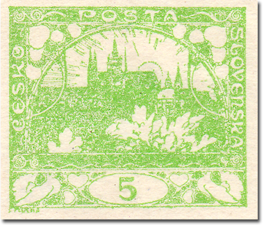
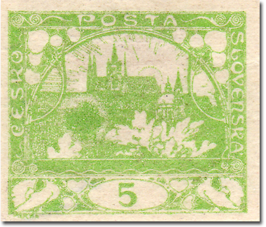
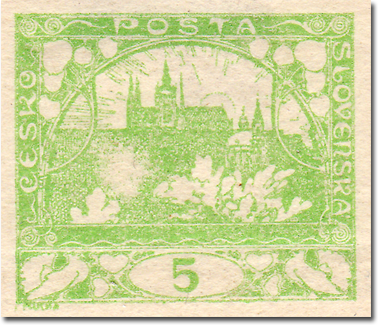
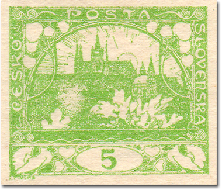
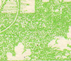
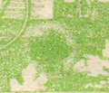
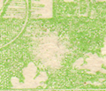
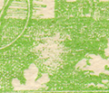

5h verde claro – mancha en 46/1 («racimo»)
Un velo conocido aparece en el sello de 5h verde claro (POFIS n.º 3), posición 46/1 – conocido entre los coleccionistas también como «racimo» (hrozen).
Este defecto de fabricación está causado por la adherencia de un objeto extraño a la plancha de impresión durante la impresión. También aquí puede verse exactamente el estado inicial, cuando el objeto extraño está sobre la plancha y la tinta de imprimir se adhiere a él – el resultado es una mancha de color (verde) con borde blanco. La fase siguiente es entonces solo una mancha blanca: el objeto se desprendió de la plancha, pero esta quedó en ese punto probablemente grasienta y no aceptaba la tinta. El velo se fue reduciendo con el tiempo, a medida que avanzaba la impresión.




Detalle de la evolución del defecto de fabricación:



